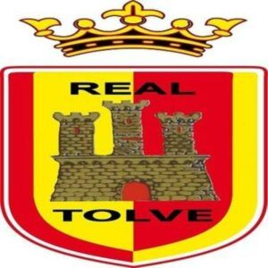

Storia
Società con sede a Potenza, che in pochi anni, con la sua politica di rete, stabilendo un rapporto di fitta collaborazione con altre piazze (Tricarico, Tolve, Brienza, Baragiano, Vaglio, Pignola, ecc.), ha notevolmente incrementato il suo raggio d’azione nel territorio lucano. Nella stagione 2017/18, quando vantava ancora un rapporto di affiliazione con l’Empoli, ha partecipato al campionato Giovanissimi Provinciali, ottenendo la seconda posizione del girone B del potentino. Nel 2018/19 ha stabilito un patto di collaborazione con il Potenza Calcio, durato per tre anni. Ha iscritto parecchie squadre nell’agonistica, compreso i campionati regionali, che sta disputando da anni, sia con la Under 17 con cui nelle ultime tre stagioni si è piazzata in seconda posizione e prima posizione, sia con la Under 15, con cui ha vinto il primo titolo regionale della sua storia, nella scorsa stagione 2022/23. Dall'anno scorso inoltre ha fuso il suo marchio con quello del Real Tolve, sempre con la denominazione Lykos.
Palmares

Nel corso degli anni, la A.S.D Lykos ha raggiunto numerosi successi, partecipando a competizioni locali e nazionali, vincendo un campionato regionale u15 nel 2022/2023, un campionato regionale u17 nel 2023/2024, un campionato regionale u19 nel 2023/2024, e la promozione in eccellenza nel 2023/2024.
Staff Tecnico
Il nostro staff tecnico è composto da professionisti.
Prima squadra ECCELLENZA: Giuseppe Scarfone, Mirko Prof: Antonino Calabrese
U19: Mirko Lotito Prof: Antonino Calabrese
U17: 1 Leandro Guaita, 2 Gianluigi Tammone Prof: Diego Garrido
U15: 1 Rocco Russo, 2 Mario Orazietti Prof: Diego Garrido
U14: 1 Kaba, 2 Francesco Pedota Prof: Diego Garrido